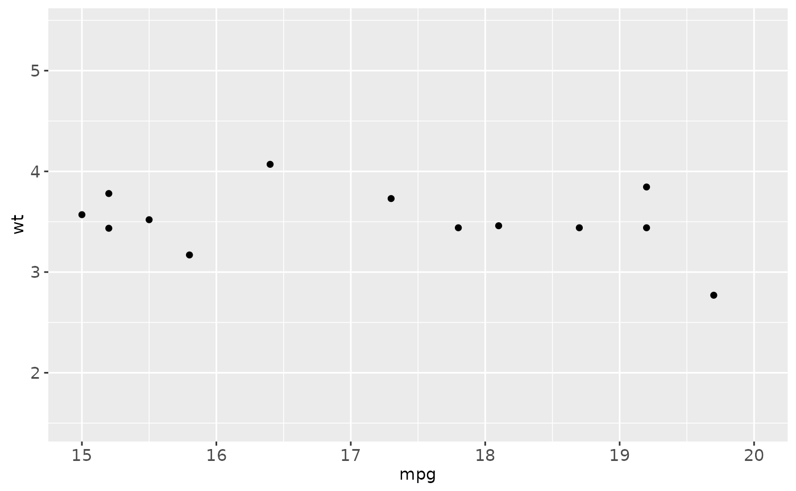
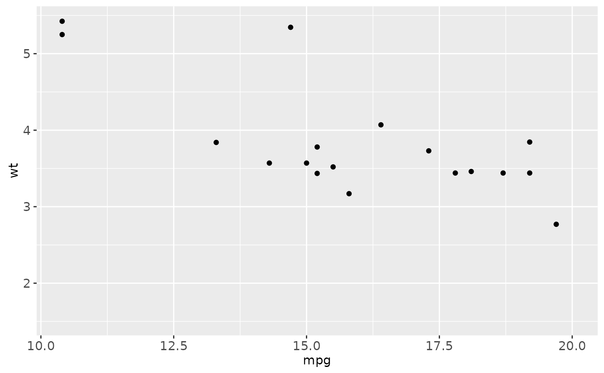
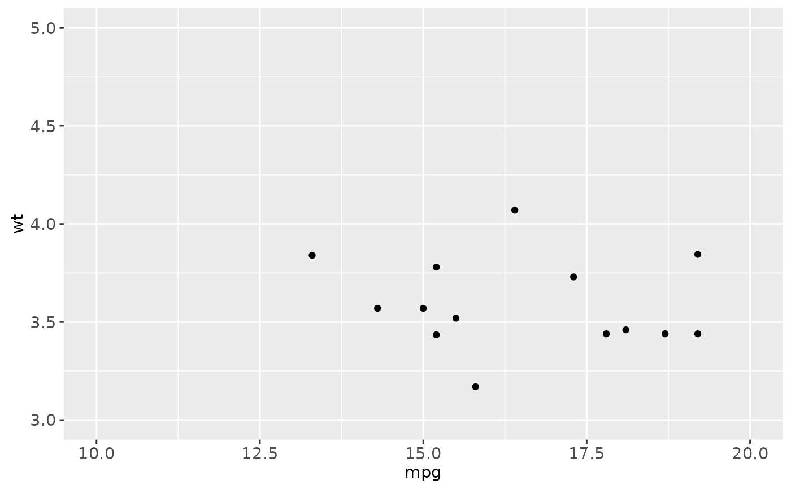

Observations not in this range will be dropped completely and not passed to any other layers. If a NA value is substituted for one of the limits that limit is automatically calculated.
See also
For changing x or y axis limits without dropping data
observations, see coord_cartesian.
Examples
# xlim
xlim(15, 20)
#> <ScaleContinuousPosition>
#> Range:
#> Limits: 15 -- 20
xlim(20, 15)
#> <ScaleContinuousPosition>
#> Range:
#> Limits: -20 -- -15
xlim(c(10, 20))
#> <ScaleContinuousPosition>
#> Range:
#> Limits: 10 -- 20
xlim("a", "b", "c")
#> <gganimintproto object: Class ScaleDiscretePosition, ScaleDiscrete, Scale>
#> aesthetics: x xmin xmax xend
#> break_info: function
#> break_positions: function
#> breaks: waiver
#> call: call
#> clone: function
#> dimension: function
#> drop: TRUE
#> expand: waiver
#> get_breaks: function
#> get_breaks_minor: function
#> get_labels: function
#> get_limits: function
#> guide: none
#> is_discrete: function
#> is_empty: function
#> labels: waiver
#> limits: a b c
#> map: function
#> map_df: function
#> na.value: NA
#> name: waiver
#> palette: function
#> range: <gganimintproto object: Class RangeDiscrete, Range>
#> range: NULL
#> reset: function
#> train: function
#> super: <gganimintproto object: Class RangeDiscrete, Range>
#> range_c: <gganimintproto object: Class RangeContinuous, Range>
#> range: NULL
#> reset: function
#> train: function
#> super: <gganimintproto object: Class RangeContinuous, Range>
#> range_is_zero: function
#> reset: function
#> scale_name: position_d
#> train: function
#> train_df: function
#> transform: function
#> transform_df: function
#> super: <gganimintproto object: Class ScaleDiscretePosition, ScaleDiscrete, Scale>
ggplot(mtcars, aes(mpg, wt)) +
geom_point() +
xlim(15, 20)
#> Warning: Removed 19 rows containing missing values (geom_point).

# with automatic lower limit
ggplot(mtcars, aes(mpg, wt)) +
geom_point() +
xlim(NA, 20)
#> Warning: Removed 14 rows containing missing values (geom_point).

# Change both xlim and ylim
ggplot(mtcars, aes(mpg, wt)) +
geom_point() +
lims(x = c(10, 20), y = c(3, 5))
#> Warning: Removed 18 rows containing missing values (geom_point).
